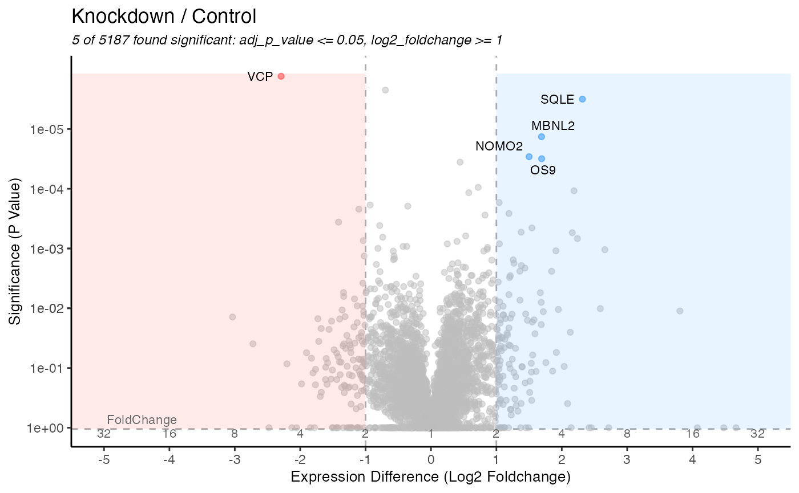

Expression
expression.RmdAnalysis of Two Samples
One of the most fundamental analyses for quantitative proteomics is
the estimation of univariate differences between two samples.
Tidyproteomics accommodates two sample analysis using the
expression() function, the results of which can be
visualized using the plot_volcano() and
plot_proportion() visualization functions as shown below.
The expression analysis can be accomplished thought the R limma
package, or using any two-sample statistical comparison, the default
method employs the two-sided T-test. Note, if no values pass the cutoff
it will automatically choose the top proteins to display.
It should be noted that this package does not incorporate some of the more recent methods described in literature. These methods could be incorporated in future revisions, or through a user provided function.
Available Methods
| t.test |
Johnston, L. W. “Student’s t-Test.” Journal of Quality Technology 2.4 (1970): 243-245. |
|
limma (Empirical Bayes) |
Ritchie ME, Phipson B, Wu D, Hu Y, Law CW, Shi W, Smyth GK (2015). “limma powers differential expression analyses for RNA-sequencing and microarray studies.” Nucleic Acids Research, 43(7), e47. |
Alternative Methods
| MSstats |
Choi, Meena, Ching-Yun Chang, Timothy Clough, Daniel Broudy, Trevor Killeen, Brendan MacLean, and Olga Vitek. 2014. “MSstats: An R Package for Statistical Analysis of Quantitative Mass Spectrometry-Based Proteomic Experiments.” Bioinformatics 30 (17): 2524–26. |
| DEqMS |
Zhu, Yafeng, Lukas M. Orre, Yan Zhou Tran, Georgios Mermelekas, Henrik J. Johansson, Alina Malyutina, Simon Anders, and Janne Lehtiö. 2020. “DEqMS: A Method for Accurate Variance Estimation in Differential Protein Expression Analysis.” Molecular & Cellular Proteomics: MCP 19 (6): 1047–57. |
| MS -EmpiRe |
Ammar, Constantin, Markus Gruber, Gergely Csaba, and Ralf Zimmer. 2019. “MS-EmpiRe Utilizes Peptide-Level Noise Distributions for Ultra-Sensitive Detection of Differentially Expressed Proteins.” Molecular & Cellular Proteomics: MCP 18 (9): 1880–92. |
| meqrob |
Sticker, Adriaan, Ludger Goeminne, Lennart Martens, and Lieven Clement. 2020. “Robust Summarization and Inference in Proteome-Wide Label-Free Quantification.” Molecular & Cellular Proteomics: MCP 19 (7): 1209–19. |
Expression Analysis
Input Parameters
| parameter | description | inputs | default |
|---|---|---|---|
| log2fc_min | the minimum cutoff for displaying | 0 to Inf | 2 |
| signifi cance_column | the column to use for significance |
dj_p_value, p_value* |
a dj_p_value |
| sign ificance_max | the minimum cutoff for displaying | 1 to 1/Inf | 0.05 |
| l abels_column | how to label the points | any value in annotations, eg gene_name, description | protein |
| show_pannels | show the colored areas highlighting significance | TRUE / FALSE | TRUE |
| show_lines | show the dotted cutoff lines | TRUE / FALSE | TRUE |
| s how_fc_scale | show the second scale on top converting l og2_foldchange to foldchange | TRUE / FALSE | TRUE |
| point_size | size of each dot | 1/10 to 5 | NULL |
| co lor_positive | color for positive expression | [any R accepts] (htt%20ps:// r-charts%20. com/colors/) | dodgerblue |
| co lor_negative | color for negative expression | [any R accepts] (htt%20ps:// r-charts%20. com/colors/) | firebrick1 |
library("dplyr")
library("tidyproteomics")
rdata <- hela_proteins %>%
normalize(.method = 'loess') %>%
expression(knockdown/control)Exporting Results
The results of this analysis are stored in the tidyproteomics data-object and can easily be exported to save as a flat data table or used in an external down stream analysis.
rdata %>% export_analysis(knockdown/control, .analysis = 'expression')
#> # A tibble: 4,829 × 18
#> protein imputed n average_expression proportional_expression foldchange
#> <chr> <dbl> <int> <dbl> <dbl> <dbl>
#> 1 Q9NXV2 0 6 2768778. 0.0000113 14.0
#> 2 Q8TBM8 0.333 6 3005450. 0.0000123 6.31
#> 3 O95833 0.167 6 3047900. 0.0000124 6.02
#> 4 Q14534 0.333 6 4043660. 0.0000165 4.98
#> 5 Q5JUW8 0 6 1568377. 0.00000640 4.72
#> 6 Q9Y385 0 6 1294518. 0.00000528 4.55
#> 7 Q9Y4C2 0 6 6476607. 0.0000264 4.47
#> 8 O00214 0.333 6 1257127. 0.00000513 4.38
#> 9 Q9H6H4 0 6 2167884. 0.00000884 4.25
#> 10 Q8WU67 0.333 6 928918. 0.00000379 4.10
#> # ℹ 4,819 more rows
#> # ℹ 12 more variables: log2_foldchange <dbl>, p_value <dbl>, adj_p_value <dbl>,
#> # description <chr>, gene_id_entrez <chr>, gene_id_ensemble <chr>,
#> # gene_name <chr>, biological_process <chr>, cellular_component <chr>,
#> # molecular_function <chr>, wiki_pathway <chr>, reactome_pathway <chr>Volcano Plot
The default is to plot accoring to adjusted p-value with a Log2 fold-change cutoff of 2 or greater.
rdata %>% plot_volcano(knockdown/control)
The parameters can be adjusted to suit your needs …
rdata %>% plot_volcano(knockdown/control,
significance_column = 'p_value',
significance_max = 0.01,
log2fc_min = 2)
… or desires.
library(ggplot2)
#>
#> Attaching package: 'ggplot2'
#> The following object is masked from 'package:tidyproteomics':
#>
#> annotate
rdata %>% plot_volcano(knockdown/control,
significance_column = 'p_value',
significance_max = 0.01,
log2fc_min = 2,
color_positive = 'orange',
color_negative = 'purple',
show_lines = FALSE,
show_fc_scale = FALSE,
show_pannels = FALSE,
labels_column = 'gene_name') +
labs(title = "A nice volcano plot", subtitle = "with great colors")
Proportional Plot
The proportional plot is complementary to the volcano plot and
utilizes all the same underlying data. The default is to show both the
top 1% (proportion_min = 0.01) along with the values
passing the fold-change and significance cutoffs.
library(ggplot2)
rdata %>% plot_proportion(knockdown/control)
#> Warning: ggrepel: 1 unlabeled data points (too many overlaps). Consider
#> increasing max.overlaps
This plot can likewise also be manipulated like the volcano plot.
library(ggplot2)
rdata %>% plot_proportion(knockdown/control,
significance_column = 'p_value',
proportion_min = 0.1,
log2fc_min = 2,
color_positive = 'orange',
color_negative = 'purple',
show_lines = TRUE,
labels_column = 'gene_name')
#> ℹ proportional_expression appears to sum to 1 adjusting values to 100(%)